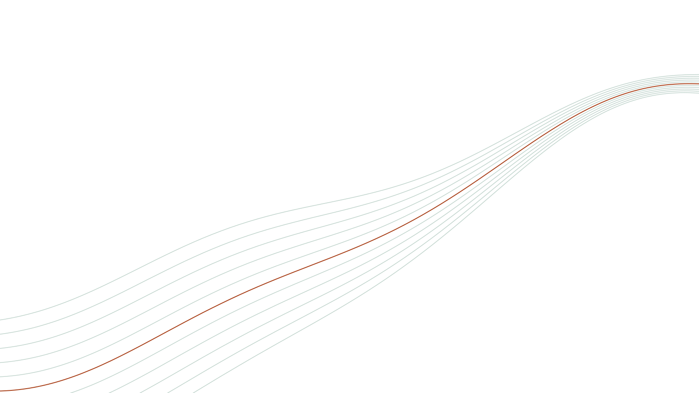
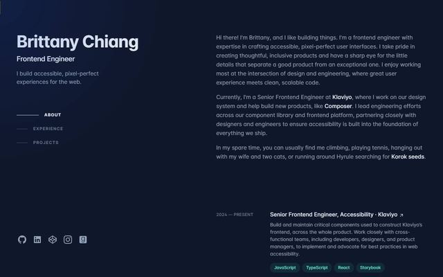
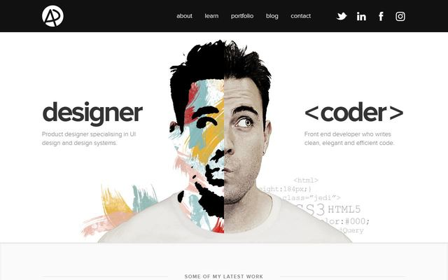
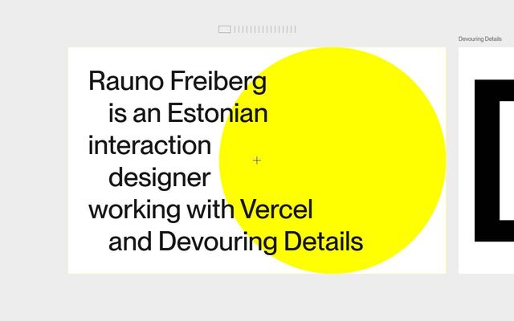
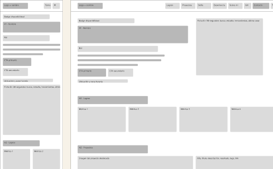
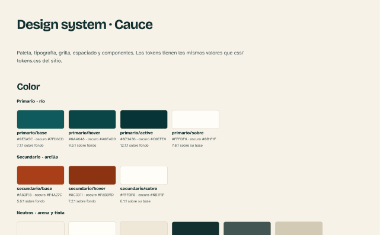
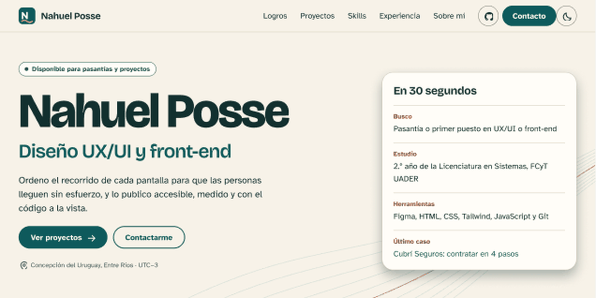
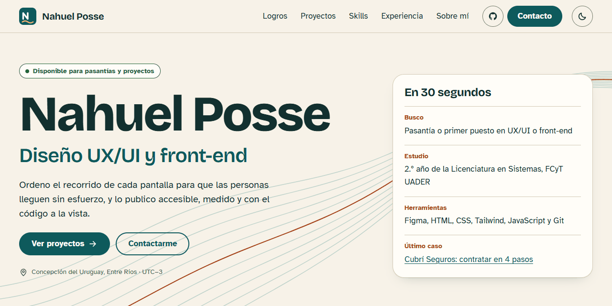

Diseño UX-UI 2026 · Trabajo final
Del usuario al sitio publicado. Licenciatura en Sistemas de Información, FCyT UADER.
1 · Usuario
Laura, 34 años, líder de diseño en una software factory de la región. Evalúa perfiles junior desde el celular. Es una hipótesis, no surge de entrevistas.
Recibe el link de un candidato y lo abre en el celular. Si en medio minuto entiende quién es y ve algo que le interesa, guarda el contacto y más tarde lee un caso completo.
2 · Benchmark

Funciona: experiencia por período, con tags.
No funciona: proyectos sin problema ni proceso.
Me llevo: timeline y sección actual marcada.

Funciona: doble perfil claro en un segundo.
No funciona: texto secundario chico y de bajo contraste.
Me llevo: decir el doble perfil, con texto legible.

Funciona: síntesis extrema y copiar el email.
No funciona: cuesta encontrar experiencia y CTA.
Me llevo: el botón para copiar el email.
3 · Concepto
Color: arena de fondo y tinta con más de 10:1.
Tipografía: Atkinson Hyperlegible.
Imágenes: capturas reales, sin decoración.
Color: pocos colores, por rol.
Tipografía: escala definida y espacios múltiplos de 4.
Imágenes: líneas paralelas, como un plano.
Color: río, arena y barranca del Litoral.
Tipografía: Bricolage Grotesque en títulos.
Imágenes: retrato ilustrado con líneas de nivel.
4 · Arquitectura
25 tarjetas agrupadas por el autor en 5 preguntas: quién es, qué hizo, qué sabe usar, de dónde viene y cómo contactarlo.
Decisión: se invierte el orden de la referencia. Laura busca pruebas de trabajo antes que una lista de herramientas.
Es una hipótesis que el test con personas tiene que confirmar.
5 · Wireframes

6 · Design system

7 · Figma vs. sitio


El prototipo de alta fidelidad se generó a partir de la maqueta y usa las variables y estilos del design system.
8 · Implementación
Lighthouse mobile sobre la URL pública. Captura en docs/lighthouse-mobile.png.
9 · Validación
| Tarea | P1 | P2 | P3 |
|---|---|---|---|
| Decir qué hace y qué busca, tras 30 segundos | |||
| Encontrar el email | |||
| Abrir el proyecto más reciente | |||
| Decir con qué herramientas diseña | |||
| Abrir el menú mobile e ir a Experiencia | |||
| Decir dónde estudia y en qué año va |
A completar después de las sesiones.